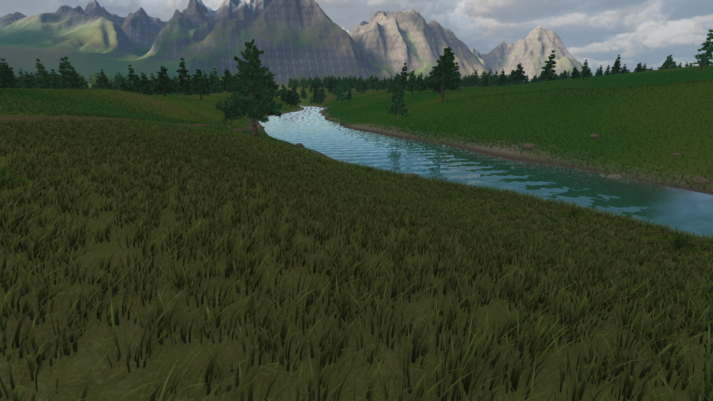
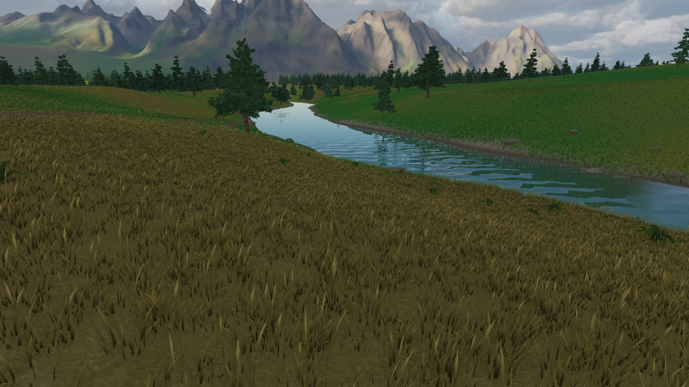

<!doctype html>
<html lang="ja">
<meta charset="utf-8"><meta name="viewport" content="width=device-width,initial-scale=1">
<title>草原・川・山の変更前後 | CirrusEngine</title>
<style>
*{box-sizing:border-box}body{margin:0;background:#101815;color:#eff3ec;font:16px/1.6 "Yu Gothic UI",Meiryo,sans-serif}main{max-width:1440px;margin:auto;padding:20px clamp(12px,3vw,42px) 32px}header{display:flex;align-items:center;justify-content:space-between;gap:20px;flex-wrap:wrap}h1{font-size:clamp(22px,3vw,34px);margin:0}a{color:#b4ddab}button{font:inherit;border-radius:5px;padding:.35rem .75rem;border:1px solid #56675b;color:#e7f1e8;background:#26342c;cursor:pointer}button[aria-pressed=true]{background:#c1deb8;color:#17261b;border-color:#c1deb8}nav{display:flex;flex-wrap:wrap;gap:8px;margin:1em 0}.box{position:relative;aspect-ratio:16/9;background:#23342a;overflow:hidden;margin:0}.box img{position:absolute;width:100%;height:100%;inset:0;object-fit:contain}.after{clip-path:inset(0 0 0 var(--part,50%))}.line{position:absolute;top:0;bottom:0;left:var(--part,50%);border-left:2px solid #d3ffb3;pointer-events:none}.tag{position:absolute;top:10px;padding:1px 8px;background:#101815e0;border-radius:3px}.old{left:10px}.new{right:10px}.controls{display:flex;align-items:center;gap:14px;margin-top:.65em}input{flex:1;accent-color:#c1deb8}.note{color:#c4d3c6;font-size:.95em}button:focus-visible,a:focus-visible,input:focus-visible{outline:3px solid #f0cf82;outline-offset:2px}
</style>
<main>
<header><h1>草原・川・山の変更前後</h1><a href="reader.html">プログラム解説を読む</a></header>
<nav aria-label="撮影場所" id="locations"></nav>
<figure class="box" id="box"><div class="line"></div><span class="tag old" id="lt">変更前</span><span class="tag new" id="rt">変更後</span></figure>
<label class="controls">比較境界<input aria-label="変更前を表示する割合" id="split" type="range" min="0" max="100" value="50"><output id="amount">50%</output></label>
<p id="note" class="note" aria-live="polite"></p>
<a id="openOld" href="figures/seedhead-before.jpg">変更前を原寸で開く</a>　<a id="openNew" href="figures/seedhead-after.jpg">変更後を原寸で開く</a>
<noscript><p><a href="README.md">撮影条件と各画像の一覧</a></p></noscript>
</main>
<script>
const views = {
 seedhead:['乾いた草原','足元の細い穂と、地面から穂が離れて見える部分。'],
 meadow:['草原の道','道を挟んで草の色と背丈がどう変わるか。'],
 river:['川岸','水面の細かな波、浅い砂利の見え方、対岸と空の反射。'],
 ridge:['山腹','岩壁の模様の向きと、露岩から斜面へ続く材質。'],
 summit:['稜線と残雪','斜め上から見た岩の尾根と、日向の窪地に残る雪。'],
 valley:['谷の全景','足元の草、谷を流れる川、奥の山の関係。']
};
const el = id => document.getElementById(id);
function show(key){
 for(const id of ['old','new']){
  const url='figures/'+key+'-'+(id==='old'?'before':'after')+'.jpg';
  el(id).src=url;
  el(id==='old'?'openOld':'openNew').href=url;
 }
 el('note').textContent=views[key][1]+'　1920×1080、High、同じ視点・天候・シミュレーション時刻。';
 for(const button of el('locations').children) button.setAttribute('aria-pressed',String(button.dataset.key===key));
}
for(const [key,view] of Object.entries(views)){
 const button=document.createElement('button');button.type='button';button.textContent=view[0];button.dataset.key=key;
 button.addEventListener('click',()=>show(key));el('locations').appendChild(button);
}
function split(){
 const value=Number(el('split').value);el('box').style.setProperty('--part',value+'%');el('amount').textContent=value+'%';
 el('lt').hidden=value<8;el('rt').hidden=value>92;
}
el('split').addEventListener('input',split);show('seedhead');split();
</script></html>